ЗАНЯТИЕ 3.3. СМЕШАННЫЕ ЗАДАЧИ НА ПРЯМУЮ И ПЛОСКОСТЬ
В ПРОСТРАНСТВЕ
Контрольные вопросы
- Как вычислить угол между прямой и плоскостью? Условия параллельности и
перпендикулярности прямой и плоскости.
- Как выяснить, что прямая и плоскость имеют точку пересечения, прямая принадлежит
плоскости, прямая параллельна плоскости и не принадлежит ей?
Задачи
- Доказать, что прямая 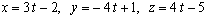 параллельна плоскости
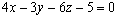 .
- Доказать, что прямая 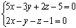 лежит в плоскости
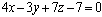 .
- Найти точку пересечения прямой и плоскости:
а) 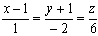 , 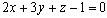 ;
б) 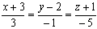 , 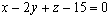 ;
в) 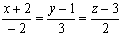 , 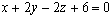 .
- Составить уравнение плоскости, проходящей через точку М ( 1; - 2; 1)
перпендикулярно к прямой 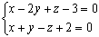 .
- При каких значениях А и D прямая 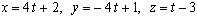
лежит в плоскости 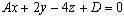 ?
- Найти проекцию точки М (2; - 1; 3 ) на прямую 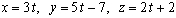 .
- Найти проекцию точки М ( 5; 2; - 1 ) на плоскость 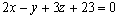 .
- Найти точку Q, симметричную точке Р ( 1; 3; -4 ) относительно плоскости
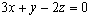 .
- Найти уравнение плоскости, которая проходит через точку М ( 3; 1; - 2 )
и через прямую 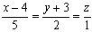 .
- Проверить, что прямые 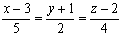 и 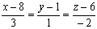
пересекаются, и написать уравнение плоскости, проходящей через них.
- Найти расстояние между двумя прямыми:
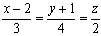 и 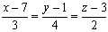 .
Ответы
-
-
- а) ( 2; -3; 6 ), б) прямая параллельна плоскости, в) прямая лежит в плоскости;
- 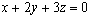 ;
- А = 3, D = - 23;
- (3; - 2; 4);
- (1; 4; - 7);
- (- 5; 1; 0 );
- 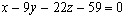 ;
- 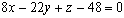 ;
- 3.